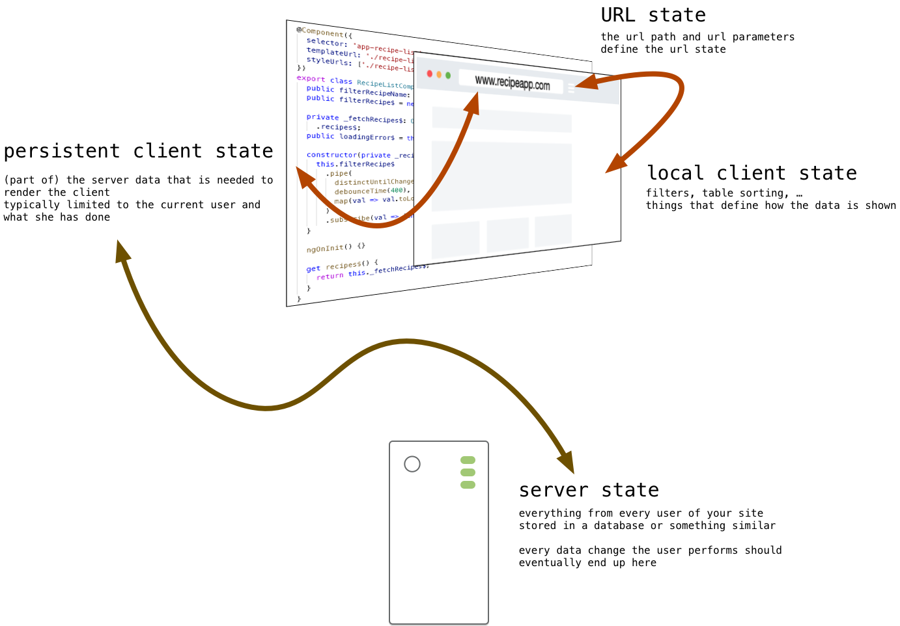
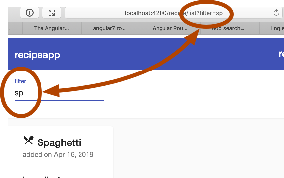

overview
-
different kinds of state
describe 5 different kinds of state -
problems with state
syncing state potentially leads to problems -
url vs local client state
example of a url to local client out of order sync problem -
local persistent vs server state
example of a local persistent to server sync problem when one request fails -
RxJS flattening operators
rxjs flattening operators explained through examples -
url vs local client state fixed
a fix using these operators for our first problem -
server vs persistent client state fixed
and a fix for our second problem
intro
- Today we'll talk about keeping and syncing state and all related problems and issues
- We'll look into some more advanced RxJS operators and how to flatten higher order Observables
- And finally we'll see how to apply those operators to fix the state issues we laid out at the start.
what changed?
- there used to be no 'real' client side state, everything had to be encoded in the url / cookie since the client side was overwritten with every request
- whatever you kept in arrays or classes in javascript was gone when the next request was made, the javascript got completely reloaded
- with an SPA the client becomes persistent too; we adapt an existing page with json coming from the server, but the javascript is not reloaded
- we can now hold a cache of the server state, and some client specific state on top of that
5 kinds of state
state is stored, and duplicated, at various places in our app
- server state
- persistent client state
- local client state
- url (or router) state
- transient client state
server state
- typically some sort of database which stores info about every user and every aspect of our webapp
- providing efficient and correct access to this state is a (really) hard problem in itself (sharding, CDN, ...) but not the topic of today
persistent client state
- this is a subset of the server state on our client, often limited to the current user and what she has done and seen till now
-
while 'in the end' you want the server and persistent client state
to be the same, at certain points in time they can (and will)
differ
- server can be ahead: the client still needs a 'refresh'
- the client can also be ahead, optimisticly showing updates which still need to happen on the server
local client state
- client state that is NOT stored on the server
- things like a local filter, sort settings on a table, ...
- usually (but not limited to) stuff that changes the way you view the data from the server
url (router) state
- reflects both the persistent and the local client state
- very important that it always reflects what the user sees, people expect bookmarking, back/forward and copying links to work
- always keep in mind users can (and will) alter the url to navigate your app, this should always work correctly
transient client state
- less important, but some things that are part of your state will not be reflected in the url or on the server
- the canonical example: if you pause a youtube video, switch to another window and switch back, you can continue playing where you left of, but this is nowhere reflected neither on the server nor in the url
syncing state
problems with state
- in a single user, synchronous world, where everything a computer does happens instantenously, there wouldn't be problems with keeping state
- but keeping state means syncing state, and syncing state flawlessly in an asynchronous world is hard
- multiple sync requests can happen simultaneously, overwriting (and hence negating) eachother
- delayed requests can result in out of order syncing, resulting in inconsistent state
URL vs local client state
- as a first example, let's adapt our recipe list component so that the url reflects what's typed in the filter input field, and vice versa, 
- we'll adapt the server side as well, and do the filtering there (requesting everything and applying client side filtering was never a good idea)
- and we'll cache these server results in our recipe list component; obviously we need state in order to have problems with state!
recipe list component
src/app/recipe/recipe-list/recipe-list.component.ts
export class RecipeListComponent implements OnInit {
public filterRecipeName: string = '';
public recipes: Recipe[];
constructor(
private _recipeDataService: RecipeDataService,
private _router: Router,
private _route: ActivatedRoute
... ) {}
ngOnInit() {
this.filterRecipe$
.pipe(
distinctUntilChanged(),
debounceTime(250)
...)
.subscribe(val => {
const params = val ? { queryParams: { filter: val } } : undefined;
this._router.navigate(['/recipe/list'], params);
...});
this._route.queryParams.subscribe(params => {
this._recipeDataService
.getRecipes$(params['filter'])
.subscribe(val => (this.recipes = val));
if (params['filter']) {
this.filterRecipeName = params['filter'];
}
});
}
}
we'll update the input field based on the url, so we start with
an empty string (and not undefined),
and use this as
[value]= 'filterRecipeName' in the
html
we'll also keep a local copy of the result of a query
so we no longer async pipe subscribe to a result, but actively
subscribe and copy the results
in order to cope with the query parameters in the url, and to
be able to change the url if the filter changes, we need access
to both the ActivatedRoute and the
Router
we still subscribe to the
filterRecipe$, which emits a value
every time a keyup happens in our
filter input filed
but instead of filtering the recipes based on this value, or
requesting a filtered list from the data service, we update the
url to reflect this filter
the url becomes the 'source of truth', based on what the url
contains we show a filtered list, when the filter changes we
update the url and have the router show this new url
updating based on the url is done by subscribing to the
queryParams of the route
we call the new
getRecipe$(name, chef, ingredient)
function on our data service, which gets us the filtered
results
and we set the contents of the input field based on the query
parameters (to be consistent when someone copy pastes or changes
the url)
note that this doesn't result in an endless loop, we listen to
keyup events to trigger routing to a new url, not to changes of
the value of the input field
if we
try this out everything
appears to work correctly
but...
URL vs local client state
URL vs local client state
cypress/integration/recipelist.spec.js
it('delayed response brings state out of sync', () => {
cy.server();
cy.route({
method: 'GET',
url: '/api/recipes',
status: 200,
response: 'fixture:recipes.json'
});
cy.route({
delay: 2000,
method: 'GET',
url: '/api/recipes/?name=sp',
status: 200,
response: 'fixture:spaghetti.json'
}).as('getSPrecipes');
cy.route({
method: 'GET',
url: '/api/recipes/?name=la',
status: 200,
response: 'fixture:lasagna.json'
}).as('getLArecipes');
// ... all the stub routes
cy.visit('/');
cy.get('[data-cy=filterInput]').type('sp');
cy.wait(300);
cy.get('[data-cy=filterInput]').type('{backspace}{backspace}la');
cy.wait(['@getSPrecipes', '@getLArecipes']);
cy.get('[data-cy=recipeCard]').should('have.length', 1);
cy.get('[data-cy=recipe-title]').should('contain', 'Lasagna');
});
it used to be very cumbersome to see these errors in action
but not anymore, cypress makes testing this (and seeing it fail)
rather easy
we start with stubbing some requests
GET of all recipes returns the fixture we defined earlier,
containing a recipe for spaghetti, lasagne and risotto
the GET of the same url, but with a queryparameter containing
'sp', returns a new fixture containing only the spaghetti
recipe
finally, the GET with the 'la' query parameter returns the
lasagna recipe
notice how we added a delay to the 'sp' request, but not the
others
this is what makes it possible to test this scenario
also note how we gave the requests a name, this makes it easier
to wait for them to complete (rather than wait an arbitrary long
enough time)
now all that's left is performing two searches
nothing new here, select the input field and type 'sp',
followed with typing 'la'
we wait 300ms between typing, because our filter has a
debounceTime(250), otherwise this
would be seen as one search
wait till all requests are done
and now check that the 'lasagna' recipe is shown
this last test should fail with our current code
let's try this out
local persistent vs server state
- before we talk about coping with these issues, lets look at a second potential problem, which involves syncing persistent and server state
- to see this problem at work, I've added a bit of server and client side code, to allow the users to rate recipes
- let's look at some code highlights
rate recipes
src/app/recipe/recipe-list/recipe-list.component.ts
this._recipeDataService.getRecipes$(params['filter'])
.subscribe(val => {
this.recipes = val;
this._recipeDataService
.getRecipeRatings(this.recipes)
.subscribe((ratingList: any[]) => {
for (const oneRating of ratingList) {
const { id, rating } = oneRating;
this.recipes.find(rec => rec.id === id).rating = rating;
}
});
});
each user can have her own ratings, so we'll show the currently
logged in user her ratings
getting recipes is an
[AllowAnonymous] route at our
backend, so we can't get the recipes + ratings in one request
so we'll do a second service call, asking for all the ratings of
the recipes we received
and based on these results we'll update our recipes with the
ratings
rate recipes
src/app/recipe/recipe-data.service.ts
getRecipeRatings(recipes: Recipe[]): Observable<any> {
const idQueryParam = recipes.map(rec => `id=${rec.id}`).join('&');
return this.http.get(
`${environment.apiUrl}/recipes/rated/?${idQueryParam}`
);
}
the getRecipeRatings in our service doesn't entail much
based on the recipes provided, we construct a query param with
all their id's
passing multiple query parameters with the same name is done by
chaining them, e.g. ?id=1&id=3&id=4
notice that we don't pass any user info explicitly here,
although asking for a recipe's rating only makes sense when
linked to a user
that's because the user is added in the HttpHeader added via the
interceptor we created last chapter
so the Bearer token will contain all info about the user the
backend needs, there's no need to redundantly add this again
rate recipes
RecipeApi/Controllers/RecipesController.cs
[HttpGet("Rated")]
public IEnumerable<RatedRecipeDTO> GetRatedRecipes(
[FromQuery(Name = "id")] int[] recipeIds)
{
Customer customer = _customerRepository.GetBy(User.Identity.Name);
List<RatedRecipeDTO> ratedRecipes = new List<RatedRecipeDTO>();
foreach (var ratedRecipe in
customer.RatedRecipes.Where(p => recipeIds.Contains(p.Key.Id)))
{
ratedRecipes.Add(
new RatedRecipeDTO(ratedRecipe.Key, ratedRecipe.Value));
}
return ratedRecipes;
}
[HttpPut("Rate/{id}/{rating}")]
public ActionResult<RatedRecipeDTO> RateRecipe(int id, int rating)
{
Customer customer = _customerRepository.GetBy(User.Identity.Name);
Recipe recipe = _recipeRepository.GetBy(id);
if (recipe == null)
{
return NotFound();
}
customer.RateRecipe(recipe, rating);
_customerRepository.SaveChanges();
return new RatedRecipeDTO(recipe, rating);
}
at the backend we added two new routes, one to get ratings, one
to rate
nothing you haven't learned in Web3 already, it involves adding
a many-to-many relationship between users and recipes, and
associating a (integer) rating with each link
retreiving the ratings involves filtering all ratings based on
the query id parameters
and converting the result into an array with (id, rating) pairs
something of the form
[{"id": 1, "rating": 4}, {"id": 2, "rating": 3}]
rating a recipe by a user is done using a put request with the
recipe id and rating as parameter
the 'real' work is done inside the customer class, it's done by
removing any previous ratings for this user from the join table,
and adding a new one
if we succeed we return the rating we set
rate recipes
src/app/rating/rating.component.css
.rating:not(:checked) > label:before {
content: '★ ';
}
.rating > input:checked ~ label {
color: #f70;
}
.rating:not(:checked) > label:hover,
.rating:not(:checked) > label:hover ~ label {
color: gold;
}
.rating > input:checked ~ label:hover,
.rating > input:checked ~ label:hover ~ label,
.rating > label:hover ~ input:checked ~ label {
color: #ea0;
}
showing the rating is done using a small new component which
will display five input radio buttons
most of this component is css, showing a star and coloring it on
hover and click
each input radio button responds to clicks and will emit an
event which is captured by the recipe component who uses this
rating component
rate recipes
src/app/recipe/recipe/recipe.component.ts
export class RecipeComponent implements OnInit {
@Input() public recipe: Recipe;
constructor(private _recipeDataService: RecipeDataService) {}
adjustRating(clickObj: any): void {
this._recipeDataService
.rateRecipe(this.recipe, this.recipe.rating)
.subscribe(
() => {
this.recipe.rating = clickObj.rating;
},
() => {
this.recipe.rating = 0;
}
);
}
}
when such a click occurs the recipe will call the rate recipe
route through our service
we set our rating with the response from the server, if all went
correctly this is obviously the same rating we passed in the
first place
but what if it fails?
we don't want to show four stars highlighted if setting the
rating failed
the user would think his rating was set, while it wasn't
so we'll add an error handler as well, and set the rating to 0
if setting the rating failed
let's see this in action
once more, it will appear to work, but...
persistent local vs server state
persistent local vs server state
cypress/integration/ratingsync.spec.js
it('delayed response brings state out of sync', () => {
cy.server();
cy.route({
method: 'GET',
url: '/api/recipes',
status: 200,
response: 'fixture:recipes.json'
});
cy.route({
method: 'GET',
url: '/api/recipes/rated/?id=1&id=2&id=3',
status: 200,
response: [
{ id: 1, rating: 0 },
{ id: 2, rating: 2 },
{ id: 3, rating: 1 }
]
});
cy.route({
method: 'PUT',
url: '/api/recipes/rate/1/4',
status: 500,
response: ''
}).as('rateFail');
cy.route({
method: 'PUT',
url: '/api/recipes/rate/1/2',
status: 200,
response: ''
}).as('rateSucceed');
// stubs for the routes
cy.visit('/');
cy.get('[data-cy=rate_4]')
.first()
.click();
cy.get('[data-cy=rate_2]')
.first()
.click();
cy.wait(['@rateFail', '@rateSucceed']);
cy.get('[data-cy=input_2]')
.first()
.should('be.checked');
});
});
once more, the easiest way to see the error ocurring is using
cypress
we start by stubbing some routes to have a starting point when
loading the pages, our recipes fixture we always return
but now also a route which returns ratings for the current user
for those three recipes
then we stub two rate routes, both rating recipe 1, but the one
rating 4 stars fails with an error 500
the test then, involves loading the page, clicking the fourth
star followed by the second
which should result in the second one being 'checked' (since
that one returns a 200), but obviously this will fail with our
current code
note the use of .first(), since this
rating component is used three times on the page, there are
multiple elements with the same
data-cy on the page
let's check this out
core of the problem
- our real problem is twofold
- there is no clear sync strategy
- side effects are not separated
- one of the more popular ways of dealing with this state problem is facebook's flux architecture, implemented for React as Redux, or for Angular as NgRx
- (others are popping up lately, one of the more interesting ones being MobX)
- we'll choose another route though, we'll go pure RxJS, we'll solve state syncing problems by not holding state ourselves
RxJS Flattening
const greetPeople$ = of('Destiny', 'Melody', 'Candy');
greetPeople$
.pipe(map(name => `hi ${name}, nice to meet you!`))
.subscribe(result => console.log(`${result}`));
const http = {
talkToMe$(name) {
return of(`Hi ${name}, nice to meet you!`,
`Is ${name} your real name or your stripper name?`);
}
};
greetPeople$
.pipe(
mapmergeMap(name => http.talkToMe$(name)),
mergeAll()
)
.subscribe(result => console.log(`${result}`)resultObservable => resultObservable.subscribe(result => console.log(`${result}`)));
// [Object object]
// [Object object]
// [Object object]
// Hi Destiny, nice to meet you!
// Is Destiny your real name or your stripper name?
// Hi Melody, nice to meet you!
// Is Melody your real name or your stripper name?
// Hi Candy, nice to meet you!
// Is Candy your real name or your stripper name?
http.talkToMe$('Shaniah').subscribe(console.log);
// Hi Shaniah, nice to meet you!
// Is Shaniah your real name or your stripper name?
// hi Destiny, nice to meet you!
// hi Melody, nice to meet you!
// hi Candy, nice to meet you!
before we can fix our state problems, we'll first introduce a
couple RxJS operators that will allow us to handle these
situations
let's start with a simple example
we have an observable which emits strings (greetPeople$), but we want to convert these string using a
map function
nothing special, the converted string is logged
but what if the conversion function we want to use returns an
observable itself?
if you pass a function that converts
A into
B in the map, the
Observable<A> will be
converted into an
Observable<B>
say we have a talkToMe$ stream, applying two greetings to a name
returning the result as an observable (e.g. because it comes
from some http service)
applying this to a string does as you'd expect, logging both
greetings
but what if you combine them?
every time our greetPeople$ stream emits a new name, we pipe it
through our observable-greeting generating function
the result?
...
the problem is that after the subscribe, our result is still an
Observable<string> because the
result of our pipe function was an
Observable< Observable<string> >
an obvious way of dealing with this is subscribing on the result
inside the first subscribe
which gives you the result you'd want
since this is a common operation, and more involved then we show
here (subscription lifetimes matter) there is an
rxjs/operator
which achieves exactly this
as the last step of your pipe, where you have the
Observable < Observable<> >, you pipe through mergeAll
and inside your subscribe you get a string again
map'ing and merge'ing afterwards is so common there is shorthand
for this, to do this at once:
mergeMap
rxjs flattening
-
flattening means mapping to an observable and immediately
subscribing to the result and returning the result of the
subscribe
(while also managing unsubscribes, not leaking memory) - in the example of the previous slide the observables have all values available at the start and complete immediately, 'real' observables often have delays between emitting values, and then a new problem pops up
- when a second inner observable wants to start a subscription while the first is still not completed, what should happen?
- there is no right or wrong answer, it depends on what you want to achieve; this is called the 'merge strategy'
rxjs flattening
- you would usually use the combined operators mergeMap / switchMap / ... i.s.o. map first, followed by mergeAll / switchAll / ... I didn't because it's easier to explain in two separate steps
- There is no 'best' flattening operator, they all have their uses and it depends on your use case, let's quickly give some examples where you'd use each one
- (the example from the previous slides is implemented in rxjs_flattening.js in the observablesExamples repo)
merge
- merge means subscribing to all streams and passing everything along as it comes in
- a usage example would be showing data where your info comes from multiple (third party) sources, e.g. you show movie info and request some extra info from imdb and rotten tomatoes. As soon as any of those http requests finishes, you update the existing info on the screen.
switch
- switch means only subscribing to the very latest stream, and aborting all the others
- a typical use case is searching, if the user starts typing a new search string, we no longer care about any previous search results (this solves our recipe filter problem!)
concat
- concat means queueing any new streams and only subscribing if the previous one finished
- a use case is not hammering some third party service with hundreds requests at once because you try to display hundred items
exhaust
- exhaust means ignoring any new streams as long as the ongoing one isn't finished
- a typical use case is e.g. a login screen, if the user types his username and password but has the patience of a three year old and keeps clicking login-login-login while the first login request is still ongoing, you don't want to send dozens of login requests to your server
url vs local state - fixed
src/app/recipe/recipe-list/recipe-list.component.ts
this._route.queryParams.subscribe.pipe(
switchMapmap(params => {
if (params['filter']) {
this.filterRecipeName = params['filter'];
}
return this._recipeDataService.getRecipes$(params['filter'])
)
.subscribe(val => {
this.recipes = val;
// ask for and apply ratings here
// (not relevant right now)
});
if (params['filter']) {
this.filterRecipeName = params['filter'];
}
});
our problem is that based on new url parameters (i.e. a filter)
we request recipes, and show the results as they come in
if we make two consecutive calls to the
getRecipes$ and their results arrive
out of order, we end up in an inconsistent state
when a new filter comes in, we basically want to completely
ignore the previous one
we saw how to do this, using a
switchMap
i.s.o. immediately subscribing to new parameters, we will map
each parameter to a list of recipes
so remove the subscribe
and replace it with piping the result through a map function
we're in Observable of
Observable territory here, so we
need to flatten this
we'll use switchMap to only process
the last filter
because of our restructuring, we need to move the
setting-the-filter code, params is only available here
that's it, lets
try this out and see that
our cypress tests no longer fail
server vs persistent client state - fixed
src/app/rating/rating.component.ts
export class RatingComponent {
@Input() rating: number;
@Output() ratingClick: EventEmitter<any> = new EventEmitter<any>();
public ratingChange$ = new Subject<number>();
onClick(rating: number): void {
this.rating = rating;
this.ratingChange$.next(this.rating)
this.ratingClick.emit({
rating: rating
});
}
}
fixing the server vs persistent client state takes slightly more
work
right now the rating component uses an
EventEmitter, our RxJS operators
can't hook in here
but an RxJs Subject can fulfill the
same role as an EventEmitter,
generating 'events' when a click happens
so let's start by replacing the
EventEmitter with a
Subject
and i.s.o. emitting a rating object we
next a new rating
server vs persistent client state - fixed
src/app/recipe/recipe/recipe.component.html
<mat-card>
<mat-card-header>
<mat-card-title data-cy="recipe-title">
<mat-icon>local_dining</mat-icon> {{ recipe.name }}</mat-card-title
>
<mat-card-subtitle>
added on {{ recipe.dateAdded | date: longDate }}
</mat-card-subtitle>
<mat-card-subtitle>
<app-rating
[rating]="recipe.rating"
(ratingClick)="adjustRating($event)"
#ratingComponent
></app-rating>
</mat-card-subtitle>
</mat-card-header>
<!-- .... -->
</mat-card>
our html needs to change a little bit, we no longer listen to an
event originating in the rating component
now we want to subscribe to an Observable property of this
component, but in order to do that, we need access to this child
component in our code
so we'll start by adding a reference to this app-rating
component
server vs persistent client state - fixed
src/app/recipe/recipe/recipe.component.ts
export class RecipeComponent implements OnInit {
@Input() public recipe: Recipe;
@ViewChild('ratingComponent') public ratingComp: RatingComponent;
constructor(private _recipeDataService: RecipeDataService) {}
ngOnInit() {
this.ratingComp.ratingChange$
.pipe(
switchMap(newRating => {
return this._recipeDataService.rateRecipe(this.recipe, newRating);
})
)
.subscribe(
(newRating: number) => {
this.recipe.rating = newRating;
},
() => {
this.recipe.rating = 0;
}
);
}
adjustRating(clickObj: any): void {
this._recipeDataService
.rateRecipe(this.recipe, this.recipe.rating)
.subscribe(
() => {
this.recipe.rating = clickObj.rating;
},
() => {
this.recipe.rating = 0;
}
);
}
}
in our typescript we start by accessing the rating component
using a @ViewChild decorator
we no longer need the
adjustRating function (the event
that triggered it no longer happens), we'll adjust the rating
based on changes in the
ratingChange$
Subject
we'll access the Subject in our
ngOnInit, making sure we're
listening to the correct stream once we're initialized for use
for every rating that appears on the stream, we have to persist
it using our service, and update our client side as well
similar to the previous case, we pipe this through a
switchMap which notifies the backend
through our service
and we'll subscribe to the (flattened) result and update the
client side based on what the backend returned
or reset the rating if there's an error
so in a way we're translating (mapping) a number coming from a
stream into a backend call which returns an
Observable<number> itself, and
we flatten the resulting
Observable< Observable<number> >
using a switch merge strategy to alleviate sync issues
Toto, I don't think we're in Kansas anymore
reactive programming
-
we only scratched the tip of the iceberg
(no really, there are 134 rxjs operators right now) - you can do cool stuff with very little code, but you sometimes really have to apply a different way of thinking and organising your code
- reactive programming is 'in' right now, the next few years it'll get bigger for sure
- it's probably here to stay in some capacity, who knows, time will tell
- at the very least you now had some introduction to the subject
that's it! We're done

let's party like
it's the windows 95 launch!
final words
- I hope you enjoyed the course, or at the very least learned something
- special thanks to Ms Samyn for creating the backend code and slides, and both Ms Samyn and Mr De Cock for finding a lot of small and big mistakes in my slides and code
- I'd thank all students who made pull requests on the repo to fix mistakes here as well, but after teaching this course three times this hasn't happened yet, so... maybe next year! (I'm starting to think you lot don't know how to make pull requests)
- finally, good luck with the exam!